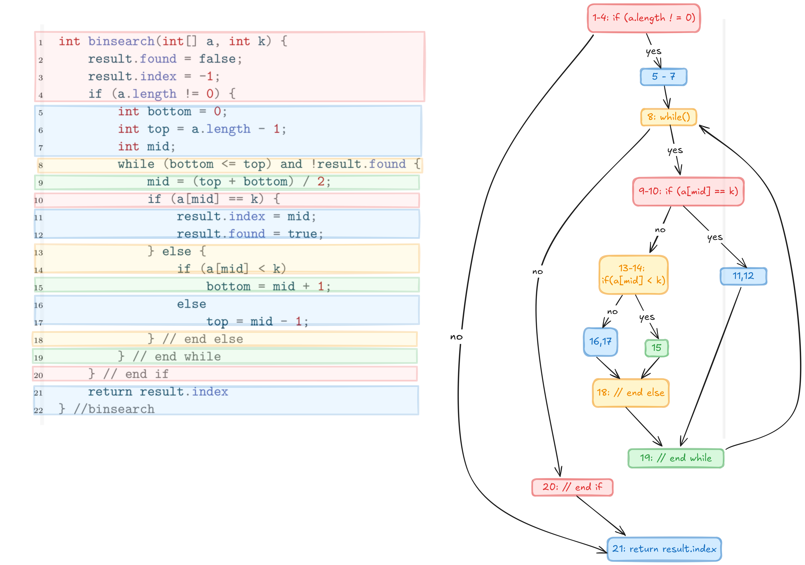

5 Quality Assurance
Quality: Software satisfies the requirements
topics:
- Introduction
- Organizational quality assurance
- Testing:
- Intro
- Test-case specification
- Black-box component testing
- White-box component testing
- System testing
- Integration testing / overall-component testing
- Static testing
- Static Analysis
- Metrics
- Inspection
- Analytical Quality assurance at large
Introduction
Core goals of software engineering:
- quality: software fulfills the requirements \(\Leftarrow\) this
- users: software is useful for the users
- developers: it is easy to develop, maintain and modify the software
- cost / time: software can be implemented within the given cost & time constraints \(\Rightarrow\) project management
Methods of quality control are based on the following questions:
- what are the requirements?
- what errors are there in the system?
- how do the errors originate and manifest in the system?
- how to prevent errors?
Terms
Validation vs Verification:
- Verification: the product fulfills requirements
- Validation: the requirements correspond to users wishes
Error and deficiency
- Error: discrepancy between the product and the requirements
- Deficiency: a requirement or an expectation is fulfilled insufficiently
Further terms:
- individual mistake by a person \(\Rightarrow\) standards, norms, training
- erroneous state / deficiency in a program \(\Rightarrow\) debugging
- error that manifest in the system \(\Rightarrow\) testing
Above 1 \(\Rightarrow\) 2 \(\Rightarrow\) 3.
How is quality control achieved:
- Quality management: general
- Quality assurance / QA: concrete processes to achieve quality
- Constructive QA \(\Rightarrow\) design, implementation, programming
- Analytical QA \(\Rightarrow\) formal proof, inspection, static linting, dynamic testing
- Organizational QA \(\Rightarrow\) project management
Testing
Introduction
Goals is to find errors that manifest in the system (Fehlerwirkung) \(\Rightarrow\) Systematic test:
- Pre-/Postconditions are defined precisesly
- Inputs are systematically specified
- Results are documented and analyzed w.r.t testing criteria
combinatorial state explosion \(\Rightarrow\) Complete testing is never possible
Terms:
- Base: all documents that the test case is derived from (requirements etc)
- Test case: consists of
- collection of inputs
- preconditions and edge cases
- expected results
- expected exceptions
- Precondition: the state of the object / environment, that must be specified, s.t. a test-case can be run
- Postcondition the state of the object / environment after the execution of the test case.
- Test run: execution of test or the suit of tests on a specific version of the test object
- Reaction of the test object: The sequence of internal states, reactions and outputs of the tested object. They must agree with the requirements / expectation (ideally tested automatically)
- specification: determining test objects and their test cases, choosing the testing methods
- derivation from the documentation and logical test cases
- condition to end the test
Test stages:
- Component / Unit Test
- Integration test: integrating components with each other
- System test: whole system
- acceptance test: after release, by the user / client
(1)\(\Rightarrow\) (2) \(\Rightarrow\) (3) \(\Rightarrow\) (4)
Regression Test: after changes in the software test to see if changes craeted new errors
Test-case Specification
Elements of a test case:
- expected behavior based on a test oracle:
- requirements specification
- user manual
- executable prototype (formal specification)
- old version
- two abstraction levels when describing the test case
- logical: range of input / output, possibly via equivalence classes
- concrete: specific input / output values, possibly representatives of equivalence classes
Description of a test case:
- name
- tested requirement / relation to a requirement
- type: component, integration, system, acceptance
- precondition
- postcondition
- test infrastructure
- description of test steps. For each step:
- input
- expected output
- expected exception
Component
Component: a self-contained code unit \(\Rightarrow\) class, function, module
typical erroneous behavior of a component:
- non-termination
- incorrect or incomplete result
- unexpected / incorrect error message
- inconsistent memory
- superfluous resource load
- unexpected exception behavior, e.g. crash
Component test types:
- Black-box: no knowledge of the internal implementation of the object, only the interface and specification.
- White-box: purposeful testing inner elements and the flow of execution, using the knowledge of its internal structure.
- Intuitive: based on knowledge / experience of typical errors \(\Rightarrow\) supplementary to the two systematic test above.
Black-box Component Testing
Properties of a black-box test:
- Test cases are derived from the input / output behavior of the operation (specification)
- The goal when deriving the text cases is the coverage of:
- input values
- output values
- specified exceptions
- especially tests that all the requirements on the operation are satisfied.
Test case description for a an operation / method test:
- name
- tested component (class)
- type: component test
- precondition: regarding relevant component data and restriction on the input
- postcondition: updated component data
- test steps: detailed description of the steps,
- input
- expected output
- expected exception
Equivalence Class Tests
Equivalence class:
- Idea: Partitioning of the range of input / output values into classes, such that values from the same equivalence class demonstrate conceptually same behavior and a single value from that class can be chosen as a representative.
- Boundary values: if the rang of values of an EQ are ordered, then
- values on both of the exact boundaries (min and max)
- as well as the neighbors of the boundaries: pred(min), succ(min), pred(max), succ(max)
typical equivalence classes:
- input:
- Valid input EQ (GEK): Valid input range, possibly subdivided w.r.t. the boundary values
- Invalid input EQ (UEK): invalid input range
- output:
- Valid output EQ (GAK): partitioning of valid input ranges s.t. various typical output values are covered (also possible subdivisions w.r.t boundary values)
- Invalid output EQ (UAK): Exceptions
Deriving test cases based on EQ
- if there are multiple inputs:
- combine all valid EQs of various inputs (cartesian product) ({GEK1, GAK1} x … x {GEKn, GAKn})
- combine all valid EQs with all possible invalid EQs {GEK1, GAK1, … , GEKn, GAKn} x {UEK1, UAK1, …, UEKn, UAKn}
Simplification:
- only frequent combinations
- only test cases with boundary values
- only pair-wise combinations
Minimal:
- each valid equivalence appears in one test case
White-box Component Test
white-box component test:
- Test cases are derived from the knowledge of the code base.
- The goal is to test weather all of parts of the code are correct.
- Requirements specification is additionally necessary as a test oracle , i.e to determine what the results of the tests should be.
Main goal is the achieve coverage of the code:
- Statement Coverage
- Branching Coverage
- Path Coverage
Coverage can be seen on the control-flow graph
Control-flow Graph
Control-flow graph is an abstraction of the code, s.t.:
- consecutive statements are united
- all branches are visible: multiple execution flows from a statement \(\Rightarrow\) individual node.
- jumps \(\Rightarrow\) individual nodes
- possibly few nodes!

Rules:
- consecutive statements until the end of a block, especially until the next if-branching or while-loop are combined to a single node. (the branching or loop condition can be included in the node as well)
- if a block consist of multiple nodes the brace closing the block gets its own individual node. (other than the brace closing the program)
- The node of the negative case of an if-else branch contains the else line and the following statements.
- The condition of a loop-statement get an individual node (due to the jump).
- If earlier
returnstatements exist in the program, thereturnstatement becomes a node that can be reached in various ways.
Statement, Branching, Path and Term Coverage
Statement Coverage
Nodes in the control flow graph are (combinations) of statements. 100%-statement coverage \(\Rightarrow\) all nodes of the graph are visited. In the previous example:
- (1-4) \(\Rightarrow\) (5-7) \(\Rightarrow\) (8) \(\Rightarrow\) (9 - 10) \(\Rightarrow\) (13,14) \(\Rightarrow\) (15) \(\Rightarrow\) (18) \(\Rightarrow\) (19) \(\Rightarrow\) (8) \(\Rightarrow\) (9-10) \(\Rightarrow\) (13-14) \(\Rightarrow\) (16,17) \(\Rightarrow\) (18) \(\Rightarrow\) (19) \(\Rightarrow\) (8) \(\Rightarrow\) (20) \(\Rightarrow\) (21)
Which input achieves this sequence? \(\Rightarrow\) key == 15, a == [1, 15, 17, 19, 20]
100% node coverage does not imply that all equivalence classes are covered
Branch Coverage
branch coverage:
- edges \(\Rightarrow\) branches.
- branch coverage \(\Rightarrow\) all edges are visited
previous example doesn’t cover the edge (1-4)\(\Rightarrow\)(21). This corresponds to the case when the input array is empty: a == [], which in turn is a UAK.
Term Coverage
- For complex branching and loop conditions every part making up the condition should be covered, i.e. every term making up the complete expression is “activated” at least once, for both when the whole condition is true, as well as false.
- Goal is to discover possible bugs due to individual terms.
Example: if(X or Y). Here X and Y are terms and X or Y is the complex condition.
Path Coverage
- Path: Sequences / combinations of edges
- 100% path coverage not feasible & not easy to define.
Grey-box Testing: White-box + Black-Box
- first define black-box test cases: simpler, since only requirements are sufficient.
- check which portions of code are not reached by the black-box tests. (e.g. with coverage plugins)
- complete the test suite by writing additional white-box tests such that 100% statement and brach coverage is achieved.
Class / Object Test
Previously we discussed testing smaller units, like methods. We can also test larger components like classes (objects).
Individual methods of class \(\Rightarrow\) gray-box.
But for testing interoperability of the methods of the whole class \(\Rightarrow\) state based test based on the state diagram of the object. Testcases are then sequences of methods calls on the object that traverse various states of the object.
System Test
System test:
- Test weather client requirements are correctly implemented \(\Rightarrow\) verification.
- Test environment should be as close to production environment as possible, but the production environment itself is not usually completely appropriate because lack or control and risk of damage.
- Both individual SF’s as well as seqences of SFs (Use Cases) can be tested.
- quality features should be tested (performance, security etc)
Black-box test case specifications for system tests:
- name
- tested system function
- type: systemtest
- precondition system: precondition on the data
- precondition GUI: what is shown on the GUI? \(\Leftarrow\) new
- test steps: actions that need to be taken on the GUI for data input and calling the SF.
- expected exceptions: problems that can occur during the exeuction of the test \(\Rightarrow\) Error message / error dialogue, or unavailability of SFs
- postcondition system: postcondition on the data
- postcondition GUI: What is the state of the GUI after successful execution?
Integration Test
- test the interoperability of components
- assumes that components are correct (tested)
- test against an technical specification (design)
- components are integrated incrementally, step-by-step.
- requires monitors: units that observe interfaces between components.
- requires stubs / drivers that temporarily stand for not yet tested components
Possible problems when components are integrated
- Wrong receiver of a message
- Wrong service / operation (operation is missing or incompletely implemented)
- Wrong call time (preconditions of the receiver are not met)
- Violation of message / calls sequences
- Mistakes in data passing:
- passed data is syntactically incorrect
- passed data is interpreted incorrectly
- Incorrect memory management (allocation / deallocation)
- Mistakes in OS / Middleware (Database, ORB) calls
- Configuration and version inconsistencies
- Divergent / conflicting interpretations of requirements by different teams (especially in distributed development)
- Incorrect usage of an interface.
- Synchronization in real-time systems.
Coverage in Integration Tests
- Integration test should test the interoperability between all components.
- which order, which components first?
- difficult to achieve this systematically, because of various complex and circular interdependencies.
- \(\Rightarrow\) Choice of an Integration Strategy:
- Top-to-bottom \(\Rightarrow\) use stubs incrementally
- Bottom-up \(\Rightarrow\) use test drivers incrementally
Integration testing specific to OO
- test initially individual classes
- subsequently test interdependent classes: due to lack of a strict hierarchy, top-bottom / bottom-up not perfectly applicable \(\Rightarrow\) scenario-based tests instead.
How are objects / classes interdependent?
- communication:
- operation calls
- using attributes of the other class
- objects / references to objects as input parameters to operations
- shared data: global variables
- shared (system) resources:
- composition / aggregation (initialization dependencies)
- shared namespace
- inheritance:
Common OO errors:
- operation is not available (configuration problems)
- incorrect object / operation called (during runtime binding)
- crash / deadlock due to usage of shared resources (process, interface)
Static Testing
again,
- Software quality:
- organisational
- programming language
- configuration management
- pair programming
- bug / error management
- constructive:
- guidelines / templates
- tools
- methods / notation
- training
- analytical:
- static analysis: computers
- inspection: humans
- dynamic testing: execution using computers
- organisational
Static Analysis
static analysis:
- compilers
- analyzer / linters
things that can be enforced / checked / discovered:
- syntax errors, as well as
- type checking
- not declared variables
- unreachable (dead) code
- array / field bounds
- consistent usage of interfaces
- deviation from conventions / standards
- conspicuous metrics
- control-flow and data-flow anomalies
Metrics
things like:
- documents (including code)
- quality
- volume and scope:
- LOC (lines of code) \(\Rightarrow\) complexity and error-proneness
- Fan in / Fan-out:
- Fan in: number of functions that call a function X. high Fan-in \(\Rightarrow\) high coupling
- Fan-out: number of functions that are called by X. high \(\Rightarrow\) complex control logic
- Branching depth: high \(\Rightarrow\) difficult to understand, error-prone
OO Metrics
- Complexity of an operation: number of test cases necessary to achieve branching coverage
- Complexity of a class:
- number of operations (weighted with their respective complexities, see above)
- inheritance depth
- number of operations that overwrite the superclass version
- Low cohesion in a class: nu of op pairs that don’t use a common attribute - nu of op pairs that use a common attribute
- coupling: external dependencies: fan-in / out w.r.t to operations
Inspection
Manual checking by humans of all sorts of documents (including code):
- necessary, because many documents can be checked by computers like:
- lastenheft
- pflichtenheft
- user manual
- …
Inspection Methods
various methods:
- durchsicht
- stellungnahme
- technical review
- walkhrough
- design & code inspections
increases in complexity and thoroughness.
how is a document reviewed:
- reading techniques:
- ad-hoc
- check-list based:
- can be derived from guidelines
- error-class / type based (similar to check-list)
- perspective based (primarily for document other than program code) \(\Rightarrow\) good for discovering semantic deficiencies: the reviewer reviews the doc from a specific perspective, and looks for the error regarding that perspective and a scenario
- Perspective:
- client
- developer
- tester
- Scenario: use the document in a sepcific way, to achieve a specific task with the goal to discover erros.
- Perspective:
Durchsicht
- Carried out by one developer alone.
- Away from the screen, alone.
- Should be always done by the developer anyways, not redundant due to other inspection methods.
Stellungnahme
- There is no manager, the author of the unit organizes and leads the review.
- Author is the manager and selects the reviewers.
- document is modified during the review without a protocol.
Technical Review
- goal: find errors (not correct) and document them
- test subject: any self-contained unit; method, module, class, document, etc
- required reference documents: specification, guidelines, question catalogue
- team: (author does review)
- reviewers (gutachter): get specific tasks and types of errors that they should look out for
- moderator: conducts / manages the review
- notary: documents / writes down the protocoll
- author: one of the people who created the unit
- manager: the boss who assigned the review task to the team (shouldn’t participate initially)
method:
- initiation: team is formed, members are assigned
- preparation: Reviewers read the doc and check it w.r.t. the tasks / points they were assigned
- review session: reviewers present their findings, discuss, weigh and protocol them.
- result: list of problems, errors and suggestions
- 3rd round: Reviewers and author talk and discuss without a protocols.
- nacharbeit:
rules:
Structured Walkthrough
- cheaper version of the technical review
- author = moderator
- author presents their document stepwise
- reviewers ask prepared or spontaneous questions to discover problems
- problems are documented / protocoled
typical for reviewing program code, albeit lower efficiency compared to the technical review.
Design & Code Inspection
The “noble” variant of the technical review with more formalities, but otherwise the same thing.
Analytical Quality Assurance at Large
Methods from testing units can be applied to large systems as well:
- static analysis
- reviews
- dynamic tests
but with more planning and larger documents.
Method of Analytical QA
method:
- panning \(\Rightarrow\) resources, who carries out the activities?
- goal: determine a testing strategy \(\Rightarrow\) methods, expends w.r.t. costs / risks
- test specification \(\Rightarrow\) what, how, which methods?
- test protocol, documentation of results $
- QA evaluation \(\Rightarrow\) what is the state of the test object, does it satisfy the quality requirements, what should be done?
- uses metrics: coverage, error discovery rate
- QA management \(\Rightarrow\) stability \(\Rightarrow\) usually associated with continuous build.
software costs categories:
- net production costs
- quality costs
- error prevention costs (QA)
- testing and correction costs (QA)
- error costs
- error searching costs (during development)
- troubleshooting costs (during development)
- subsequent costs of error in practice (in the field)
- reduction in usage of the product
- maintenance costs
goal: reduce total costs
Principles of Analytical QA
- Complete testing is not possible
- program testing ca be used to show presence of bugs, but not their absence
- Testing is not a late phase in software development, it should be done as early as possible \(\Rightarrow\) reduces costs
- Errors / bugs are not distributed evenly in the system rather often occur in clusters. Presence of bugs \(\Rightarrow\) other bugs in close proximity
- repeating same tests doesn’t bring anything new
- Bug-free system doesn’t mean that the system fulfills users expections \(\Rightarrow\) Validation vs Verification.